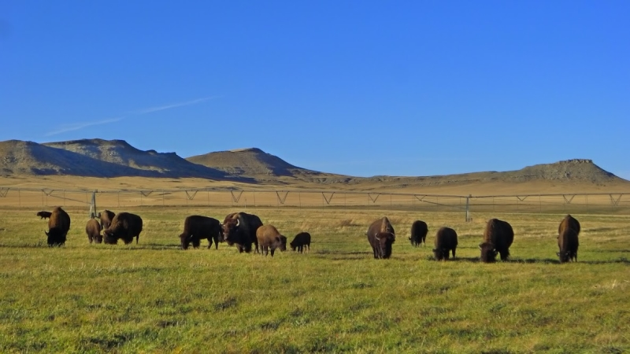
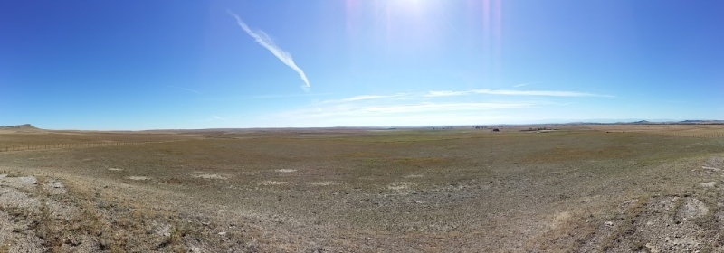
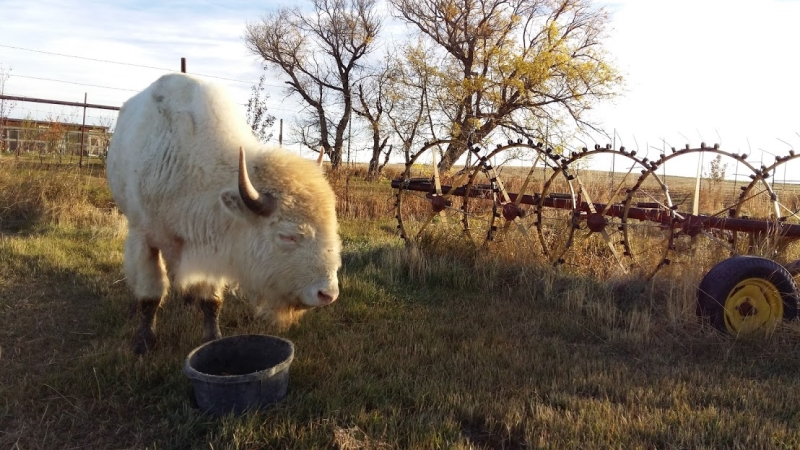
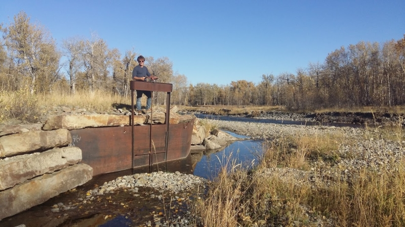
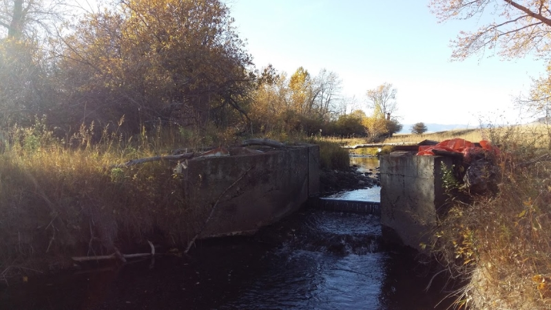
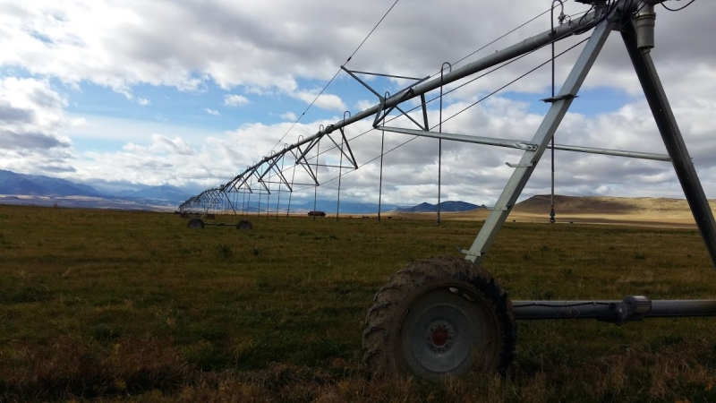
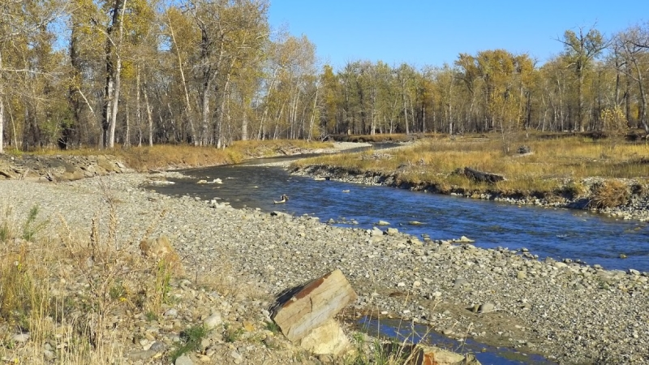
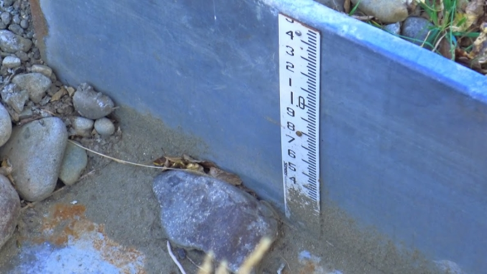
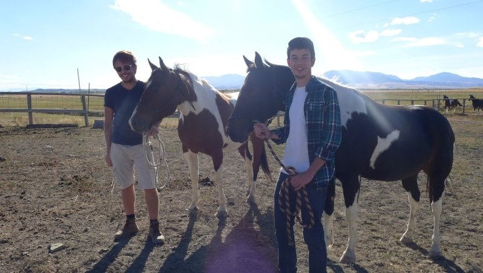

2/7 - Montana : eau, agriculture & élevage
Bonjour à tous !
Nous avions publié il y a quelques semaines notre premier article consacré à la situation des glaciers du nord des Amériques et à l'influence de leur fonte sur les écosystèmes et les climats. Après trois semaines de vie fermière dans un ranch à bison situé à Melville, au Sud du Montana, nous aimerions à présent vous parler de l'enjeu colossal que représente les apports en eau douce dans ce type d'agriculture.

Notre ranch à bison à Melville, Montana
Tout d'abord, il faut savoir que 70% de la consommation des êtres humains en eau douce est mobilisée pour l'agriculture. L'irrigation des aliments que nous trouvons dans nos assiettes représente souvent des quantités largement supérieures à celle de nos douches ou, bien sûr, de notre eau potable. Mais sur cette part, le poids des produits d'origine animale par rapport à celui des produits d'origine végétale est écrasant. On estime à 75% le pourcentage des surfaces agricoles destinées à l'élevage car, pour nourrir le bétail que l'on mange, il faut le nourrir lui même. L’utilisation d’eau dans les ranchs et autres fermes d’élevage est donc essentiellement dirigée vers les prés produisant la nourriture des animaux, qu’il s’agisse d’herbe ou de céréales.
Notre arrivée le 20 septembre dernier dans ce ranch est donc marquée par le constat direct de cette réalité: Les champs cloturés appartenant à Chris et Taunia, les propriétaires, s'étendent à perte de vue et n'hébergent pourtant que cent cinquante bêtes. Les bisons étant exclusivement nourris à l'herbe (la production du ranch est certifiée biologique), ils requièrent beaucoup d'espace.
 Le ranch s'étend à perte de vue
Full Moon, le bison albinos du ranch, pendant son petit-déjeuner
Taunia, la propriétaire du ranch, est enthousiaste en entendant le thème de notre projet et n'hésite pas, dès notre arrivée, à nous faire part de son expérience personnelle quant à la gestion de cette ressource. La propriété repose sur deux sources d'approvisionnement: les précipitations, sur lesquelles il ne faut pas entièrement se fier en raison des périodes sèches que traverse depuis plusieurs années le Montana, et une rigole détournant partiellement le cours de Sweetgrass Creek, une rivière située à proximité et découlant d'une chaîne de montagne voisine.
Antoine aux commandes de la valve permettant de détourner l'eau du Sweetgrass Creek pour le ranch
La rigole serpente sur plusieurs kilomètres avant d'arriver au ranch de la famille Kitler
Cette rigole représente le seul apport conséquent en eau l'été. Pendant quatre mois consécutifs, celui-ci abreuve d'immenses sprinklers (des structures métalliques qui répartissent l'eau sur l'ensemble du champ) qui irriguent généreusement la terre pour accélérer la pousse. Si l'allure de cette rigole semble vétuste (elle est vieille d’une centaine d’année et fût creusée à la main et à la charrue par les tout premiers propriétaires du terrain), sa gestion est le théâtre d'un conflit bien compliqué entre Taunia et Chris, leurs voisins et les Water Courts du Montana chargés de statuer sur l'utilisation des ressources de l'Etat.
Les Water Courts, littéralement tribunaux de l'eau, précisent chaque année, en fonction de l'état d'un fleuve, des précipitations locales et des ressources de l’Etat, la quantité que chaque rancher est en droit de détourner de son cours. L'ancienneté d'une propriété, sa taille et son objet entrent en compte dans le calcul d'attribution de la ressource. Chaque année, une période d'utilisation de la rigole et une limite de son débit sont émises par le tribunal. En dehors de la période attitrée, la rigole est rebouchée jusqu'à l'année suivante. Un élément intéressant est que les droits d’attribution accordés varient en fonction de l’ancienneté des détenteurs d’une propriété. Les vieilles familles locales ont donc souvent des privilèges supérieurs aux nouveaux venus.
 Un des trois sprinklers du ranch
Les premiers problèmes administratifs sont rencontrés par les ranchers à l’occasion des décisions de ces tribunaux (Dennis, le ranchman avec qui nous travaillons, nous explique contrôler le niveau de la rigole trois fois par jour, quatre mois par an) mais les préoccupations autour de son utilisation ne s’arrêtent pas là car, pour atteindre la propriété de Chris et Taunia, la rigole serpente pendant plusieurs kilomètres au travers d'autres propriétés qui sont censés ne pas y pomper leur eau… Mais qui oublient parfois cette règle.
En conséquence, les conflits de voisinage sont donc légions en période de stress hydrique. Taunia nous explique que trois ans auparavant, une sécheresse estivale avait considérablement affecté la production de foin. L'hiver suivant, elle avait dû se séparer de la moitié de son troupeau. En cause, les prix prohibitifs du foin à l'achat empêchaient l'accumulation de réserves pour l'hiver (le coût total du foin d’hiver pour un cheptel de trois cents bisons se serait élevé à plus de 300,000$).
L'apport annuel de la propriété en eau conditionne avec une immédiateté stupéfiante l'activité du ranch et sa rentabilité. Or, un procès en Water Court peut prendre de nombreuses années avant sa résolution (Chris et Taunia y sont eux mêmes impliqués depuis plus de sept ans). Dans ces conditions, il est facile de comprendre les tensions parfois vives entre des propriétés voisines se disputant une même petite rivière.
 La Sweet Grass Creek, au cœur de vives tensions entre voisins
Ce genre de situation conflictuelle est monnaie courante dans l’ensemble de l’Etat du Montana. Dans cet Etat où l’élevage est la première activité économique, l’été est souvent long et sec. Les fleuves et les rigoles les détournant constituent un apport fondamental pour l’ensemble des fermiers de la région. La répartition de cette ressource semble être une des principales tâches dédiées au gouvernement.
 Il faut contrôler avec attention le niveau d’eau pompé sur le fleuve pour ne prendre que ce qui a été légalement attribué
Malgré la présence du fleuve Missouri et malgré celle des Rocheuses, qui récoltent les lourdes précipitations hivernales pour les distribuer au cours de l’été, les sécheresses croissantes d’Amérique du Nord n’épargnent pas la région et seule la faible densité de l’Etat (2,6 habitants au kilomètre carré contre 92 pour la Californie) permettent d’éviter les situations de pénurie lourdes. Economiquement et culturellement (les cow-boys sont une figure emblématique de l’Etat) le Montana a toujours reposé sur l’élevage, qui suscite une très forte demande hydrique. Une diminution accrue des précipitations continue pourrait bouleverser significativement l’état des choses.
 Que deviendront les cow-boys si on ne peut plus nourrir les vaches ?
Le mois prochain, nous prolongerons nos observations sur les effets de la sécheresse dans la gestion de l’eau en abordant un cas où le stress hydrique et les pénuries sont une réalité depuis plusieurs années, la Californie. Comme le Montana, son agriculture a une longue histoire. A la différence de celui-ci, quarante millions de personnes y vivent. Dans la région fermière où nous résidons actuellement, le bétail fait concurrence au bétail dans la course à l’eau, mais en Californie, comment doit par exemple statuer l’Etat lorsqu’il s’agit de choisir entre son agriculture et son tourisme ?
Nous vous donnons donc rendez vous au mois prochain, et vous laissons sur la vidéo de l’interview de Taunia Kittler, propriétaire du Sweetgrass Buffalo Ranch de Melville :)
Sous-titres disponibles
A très vite !
Grégoire & Antoine